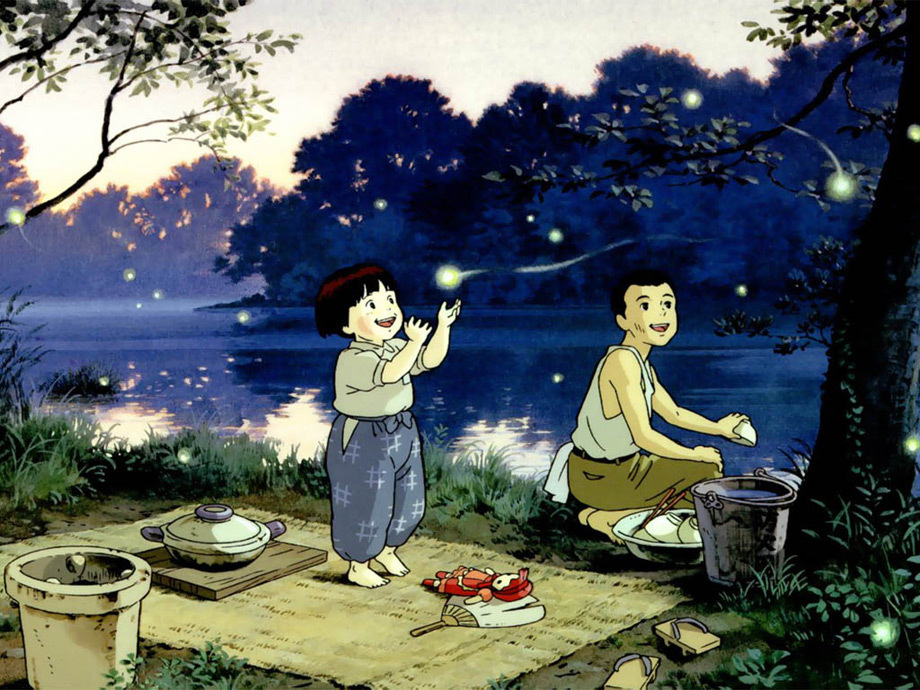

1. Spirited Away
2. Howl's Moving Castle
3. Grave's of the Fireflies

Studio Ghibli TopList Collection
- Spirited Away (2001)
- Howl's Moving Castle (2004)
- Grave of the Fireflies (1988)

"Nothing less than magical!" - Joe Morgenstern, The Wall Street Journal.
This limited-edition set comes housed in an elegant hard slipcase and includes a new 40-page book with stunning art and essays.
Featured in a deluxe disc portfolio is a Blu-ray of the film paired with hours of special features, and the film's soundtrack on CD, now available exclusively on disc in North America. The set's 40-page book features essays by film critic Kenneth Turan (The Los Angeles Times) and famed critic and film historian Leonard Maltin, and statements by Toshio Suzuki and Hayao Miyazaki. Winner of the Academy Award® for Best Animated Feature,* Hayao Miyazaki's wondrous fantasy adventure is a dazzling masterpiece from one of the most celebrated filmmakers in the history of animation.
Chihiro's family is moving to a new house, but when they stop on the way to explore an abandoned village, her parents undergo a mysterious transformation and Chihiro is whisked into a world of fantastic spirits ruled over by the sorceress Yubaba. Put to work in a magical bathhouse for spirits and demons, Chihiro must use all her wits to survive in this strange new place, find a way to free her parents and return to the normal world. Overflowing with imaginative creatures and thrilling storytelling, Spirited Away became a worldwide smash hit, and is one of the most critically-acclaimed films of all time.
*2002: Best Animated Feature, Spirited Away
.jpg)
Chihiro
A lovely and hard-working little girl who was poorly trapped in a mythical sauna.
.jpg)
Haku
Haku was the spiritual god of the Kohaku River which was polluted by the human. Because he has no home that the sauna's boss has him to be her underling by erasing his identity.
.jpg)
No-Face
Known for best favorite character of all time

